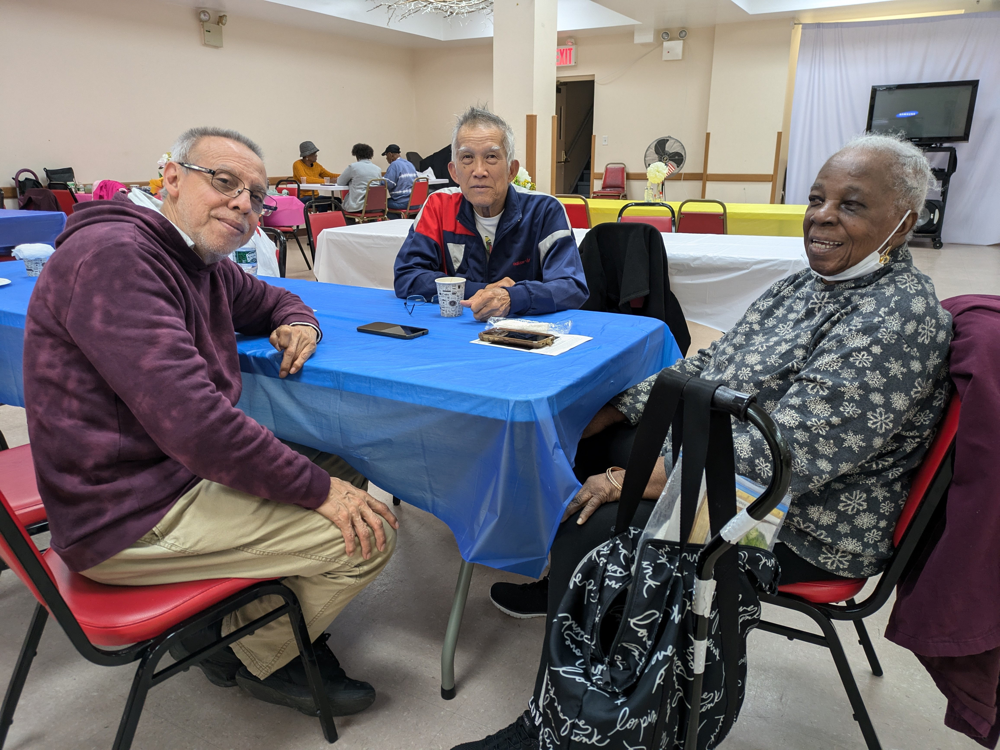

A senior center in Prospect Lefferts Gardens is one of multiple in need of upgrades to provide improved services for the city’s increasing older population.

St. Gabriel’s Older Adult Center operates every week on Monday to Friday from 9 a.m. to 5 p.m. // Credit: Elise Robley
By Elise Robley
October 25, 2024
Key spaces for older adults in Brooklyn are in critical need of more funding.
On a recent October afternoon, East Flatbush resident Mageelene Ellis-herry entered the basement area of St. Gabriel’s Episcopal Church and walked over to a table in the middle of the room to greet her friends. Recently retired, she said she was tired of sitting at home on the couch.
Ellis-herry made her first visit to the church in July after a conversation with her doctor, who recommended St. Gabriel’s Older Adult Center. She was hoping to make new friends outside, and get out of the house on the days that she is not watching her grand-daughter.
“People are friendly, and the older [seniors] look out for you.” she said.

St. Gabriel’s is one of more than 300 centers in the five boroughs that is funded by the NYC Department for the Aging. // Credit: Elise Robley
The gap between state funding and the growing senior population
St. Gabriel’s is one of three older adult centers in Brooklyn’s community district nine, which comprises the neighborhoods of Crown Heights South, Prospect Lefferts Gardens and Wingate. All of the centers are funded by the New York City Department for the Aging, an agency that aims to help the nearly 1.8 million older adults living in the city age in place. But community leaders have identified that St. Gabriel’s needs more funding.

After breakfast, the seniors were scheduled to have an hour of arts and crafts. // Credit: Elise Robley
The number of older adults 65 years or older in Community Board 9 increased by 29% between 2010 and 2020. NYC Aging attributes the growth of the population of older adults to the aging of the baby boom generation. They predict that the percentage of older New Yorkers will continue to increase through 2040, as all baby boomers will turn 60 by January 2025.
NYC Aging receives its funding from various levels of the city, state, and federal government, but 71% of its funding for the 2025 fiscal year comes from the city. Despite this, the agency faced a $20 million budget cut in the 2024 fiscal year, and a proposed $80 million budget for 2026.
Members of Community Board 9, which represents district nine, highlighted the need for increased funding for older adult centers. In its report of the district’s top priorities for funding, the board listed St. Gabriel’s as needing priority funding to upgrade the center’s furniture, appliances, and media center.
Helping the seniors keep busy
Judith Villaroel, director of St. Gabriel’s Older Adult Center, said St. Gabriel’s needs a new convection oven and new laptops for its computer class, which is an important activity that they try to maintain for the seniors. The class provides basic, intermediate, and advanced computer lessons.
“We find that when we are able to attract the younger seniors, some of the things that they are looking for is computer knowledge or computer training,” she explained.
The computer class is one of several things Ellis-herry enjoys about St. Gabriel’s.
“The teacher has a lot of patience,” she said. “[You are] never too much for nobody in here.”
Orlando Moreno (left), Ronald Hing (middle) and Eloise Lord (right) visit St. Gabriel’s center every week for games, exercise and interaction. // Credit: Elise Robley
The center receives an average of 250 to 300 visitors per week, 95% of whom are Caribbean. As the seniors get older, the center must improve its programming to meet the needs of the older participants as well.
“To revitalize the center we are looking to enhance the program by bringing in more activities that will appeal to 60 and over,” Villaroel said.
The average age group of the older participants ranges from 87 to 100 years old. Through conversations with them, Villaroel said she learned that activities involving trips are of interest to many of the seniors. She has also been looking into creating book clubs and other workshops.
In addition to outdoor trips and arts and crafts sessions, seniors can play games, receive health screenings, practice tai chi, and participate in group exercise classes.

The seniors engage in a variety of activities including doing puzzles, playing cards, or catching up with friends. // Credit: Elise Robley
Albert Woods, who visits the center mostly every day, said his favorite days are Tuesdays and Fridays because he likes to exercise and almost everyone joins in on the fun.
“We all be doing it,” he said. “We all be exercising.”
Increased funding for both NYC Aging and the contracted service providers that serve older adult centers would allow places like St. Gabriel’s to continue to provide a wide range of programming for New York City seniors.